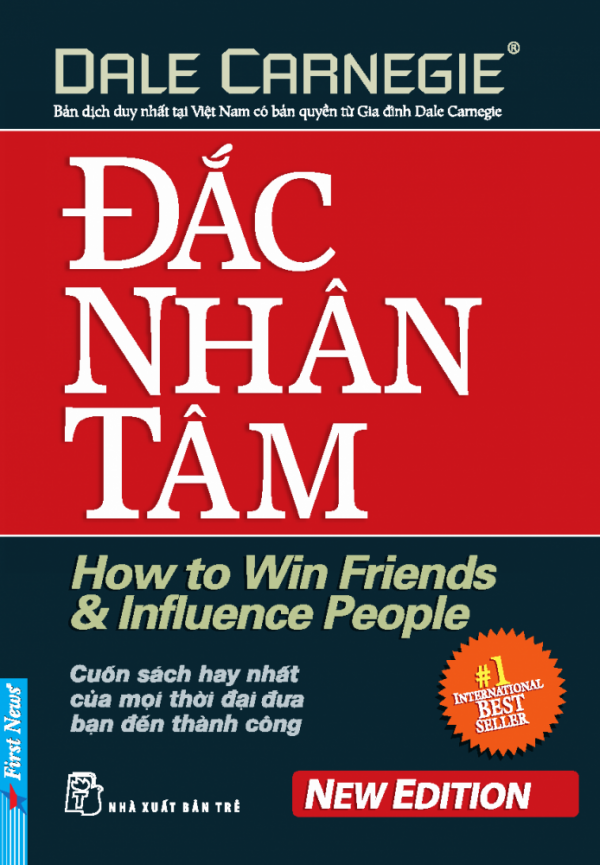
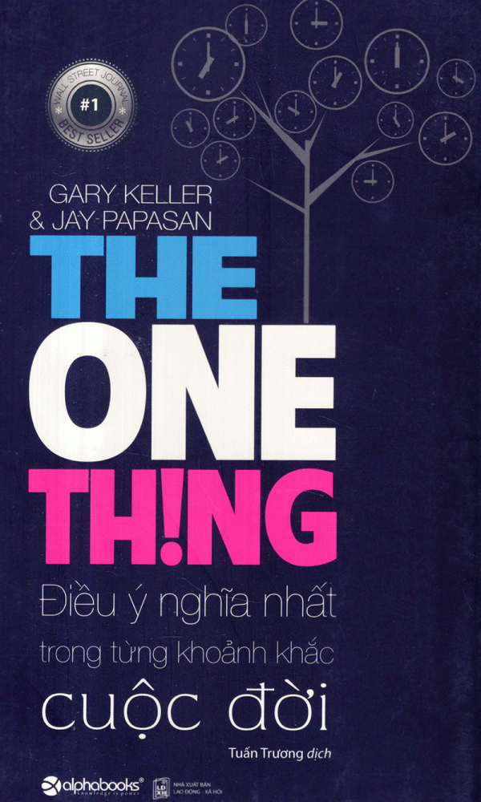
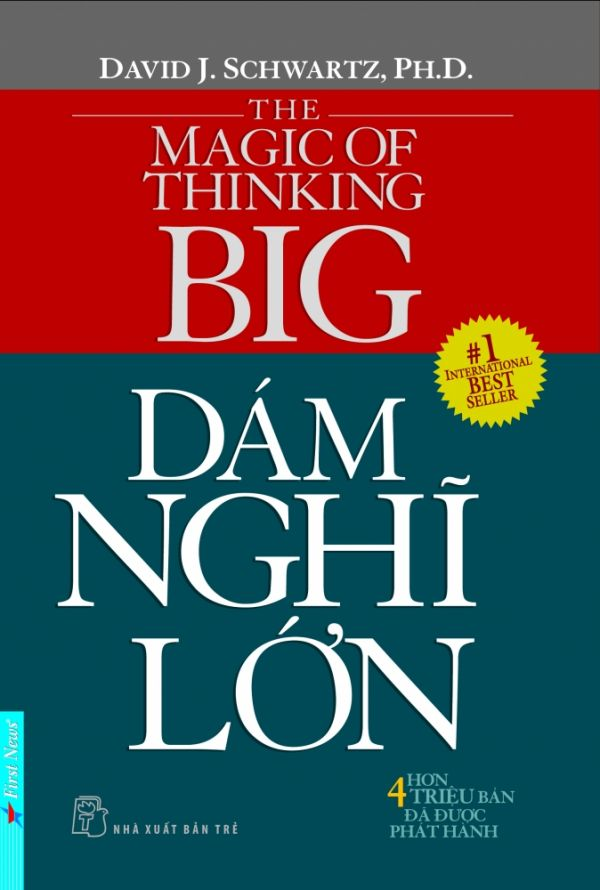
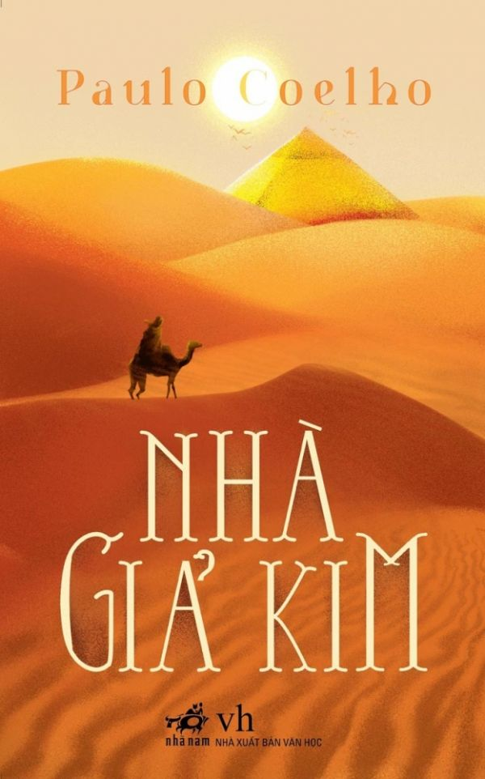
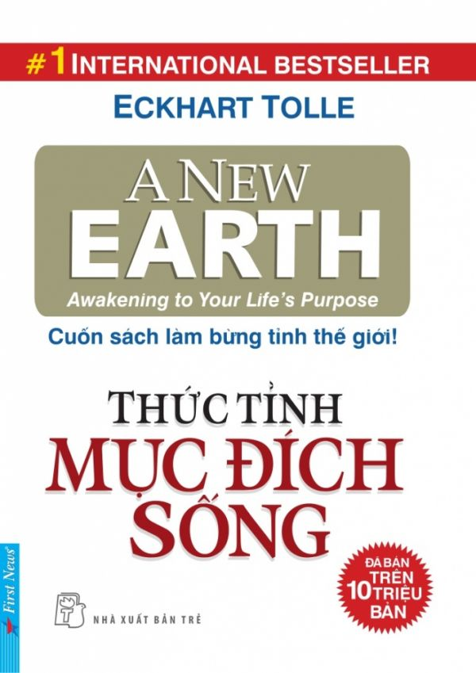
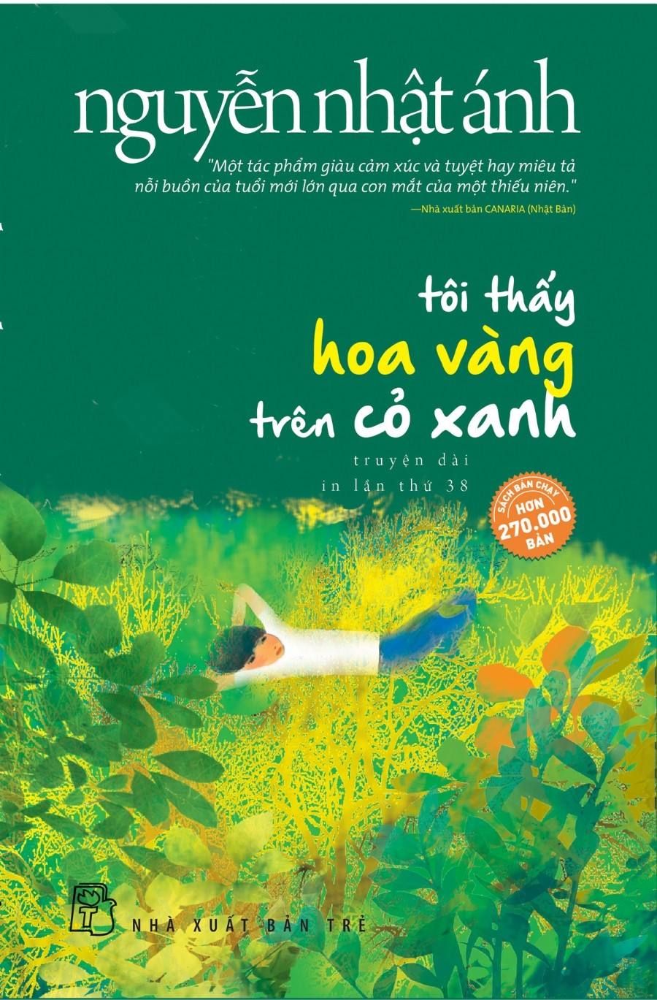
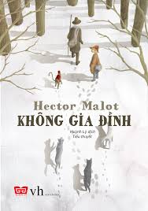
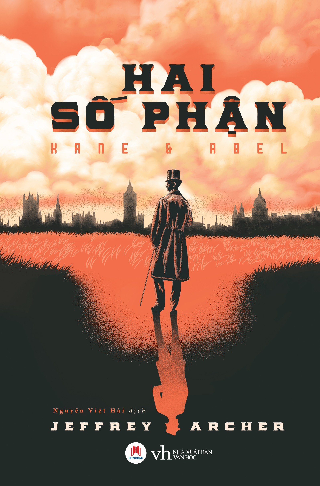
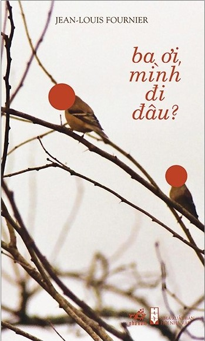
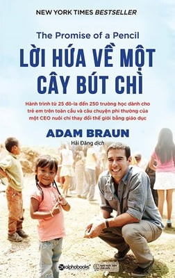

Đắc Nhân Tâm

Tác giả : Dale Carnegie
Người Dịch : Nguyễn Văn Phước
NXB : Nhà Xuất bản tổng hợp TP.HCM
Năm XB : 2019
Ngôn Ngữ : Tiếng Việt
Giá : 210.000 ₫
Hiện nay có một sự hiểu nhầm đã xảy ra. Tuy Đắc Nhân Tâm là tựa sách hầu hết mọi người đều biết đến, vì những danh tiếng và mức độ phổ biến, nhưng một số người lại “ngại” đọc. Lý do vì họ tưởng đây là cuốn sách “dạy làm người” nên có tâm lý e ngại. Có lẽ là do khi giới thiệu về cuốn sách, người ta luôn gắn với miêu tả đây là “nghệ thuật đối nhân xử thế”, “nghệ thuật thu phục lòng người”… Những cụm từ này đã không còn hợp với hiện nay nữa, gây cảm giác xa lạ và không thực tế.
Điều Ý Nghĩa Nhất Cuộc Đời

Tác giả : Napoleon Hill, Jeffrey
Gitomer
Người Dịch : Lê Quỳnh Nhiên
NXB : NXB Hồng Đức
Năm XB : 2019
Ngôn Ngữ : Tiếng Việt
Giá : 189.000 ₫
Những bài học và bài giảng đầu tiên trong cuốn “ Điều Ý Nghĩa Nhất Cuộc Đời ” đã đóng vai trò là nền tảng cho những quan điểm, triết lý, chiến lược và hệ tư tưởng trong suốt con đường viết lách của ông sau này. Hoàn toàn kinh điển. Thực sự xuất chúng. Có tất cả 23 bài học và bài thuyết giảng về lẽ phải, sự tập trung, sống chính trực, khát khao, quyết định, thái độ, niềm tin, mục tiêu và cuộc sống. Mặc dù được viết cách đây 100 năm, tất cả đều là những viên đá quý có giá trị vượt thời gian.
Dám Nghĩ Lớn

Tác giả : David J Schwartz, PH
D
Người Dịch : PH D
NXB : NXB Tổng Hợp TPHCM
Năm XB : 2019
Ngôn Ngữ : Tiếng Việt
Giá : 145.000 ₫
Dám nghĩ lớn! giới thiệu đến bạn một phương pháp tư duy đơn giản nhưng hiệu quả đến kỳ diệu. Quyển sách này trình bày một cách sinh động và dễ hiểu tiến trình giúp bạn đạt được sự mãn nguyện cao nhất trong nghề nghiệp, trong cuộc sống gia đình và trong cộng đồng của bạn. Bạn không cần phải thông minh tuyệt đỉnh hay tài năng xuất chúng mới đạt được thành tích lớn lao, bạn chỉ cần rèn luyện và thực hành thường xuyên thói quen dám nghĩ lớn.
Nhà Giả Kim

Tác giả : Paulo Coelho
Người Dịch : Lê Chu Cầu
NXB : NXB Tổng Hợp TPHCM
Năm XB : 2019
Ngôn Ngữ : Tiếng Việt
Giá : 199.000 ₫
Tiểu thuyết NHÀ GIẢ KIM của Paulo Coelho như một câu chuyện cổ tích giản dị, nhân ái, giàu chất thơ, thấm đẫm những minh triết huyền bí của phương Đông. Trong lần xuất bản đầu tiên tại Brazil vào năm 1988, sách chỉ bán được 900 bản. Nhưng, với số phận đặc biệt của cuốn sách dành cho toàn nhân loại, vượt ra ngoài biên giới quốc gia, Nhà giả kim đã làm rung động hàng triệu tâm hồn, trở thành một trong những cuốn sách bán chạy nhất mọi thời đại, và có thể làm thay đổi cuộc đời người đọc.
Thức Tỉnh Mục Đích Sống

Tác giả : Eckhart Tolle
Người Dịch : Đỗ Tâm Tuy, Diện Mục Nguyễn Văn Hạnh
NXB : NXB Tổng Hợp TPHCM
Năm XB : 2019
Ngôn Ngữ : Tiếng Việt
Giá : 104.000 ₫
Nếu được như vậy thì bạn sẽ không chỉ thấy cuốn sách là “thú vị”. Vì thú vị có nghĩa là bạn còn đứng ở bên ngoài, tìm vui với những ý nghĩ, và khái niệm ở trong đầu bạn để tư duy rằng mình đồng ý hay không nên đồng ý với cuốn sách. Vì “Thức tỉnh mục đích sống” được viết cho bạn, do đó cuốn sách hoặc rất vô nghĩa đối với bạn, hoặc nó làm cho nhận thức của bạn có sự thay đổi lớn. Tuy nhiên cuốn sách này chỉ có thể thức tỉnh những người đã sẵn sàng để tỉnh thức. Mà không phải ai cũng sẵn sàng để tỉnh thức.
7 Thói Quen Để Thành Đạt

Tác giả : Sean Covey
Người Dịch : Sean Covey
NXB : NXB Tổng Hợp TPHCM
Năm XB : 2019
Ngôn Ngữ : Tiếng Việt
Giá : 166.000 ₫
Tuổi thiếu niên và trưởng thành là tuổi đẹp nhất và quan trọng nhất của đời người. Đây cũng là lứa tuổi mà các bạn trẻ bắt đầu khám phá cuộc sống với những ước mơ, khát vọng. Phía trước các bạn là những con đường bằng phẳng, êm ái; nhưng cũng có con đường quanh co, khúc khuỷu. Có con đường ngập tràn ánh sáng, cũng có con đường u ám, đầy cạm bẫy, nguy cơ. Nhưng làm cách nào để chọn được con đường đến đích thành công, hạnh phúc mà không lãng phí nhiều thời gian, công sức? Tất cả đều phụ thuộc vào tính cách và thói quen của các bạn. Có những thói quen đem đến sự thành công, hạnh phúc; nhưng cũng có những thói quen cản trở, phá hỏng sự phát triển của bạn.
Những Bài Học Cuộc Sống

Tác giả : Hal Urban
Người Dịch : Hal Urban
NXB : NXB Tổng Hợp TPHCM
Năm XB : 2021
Ngôn Ngữ : Tiếng Việt
Giá : 132.000 ₫
Tiến sĩ Hal Urban tốt nghiệp cử nhân và cao học ngành sử học, sau đó ông nhận bằng tiến sĩ về giáo dục tâm lý tại Đại học San Francisco. Tiếp theo là bằng tiến sĩ tâm lý học tại Đại học Stanford. Ông là một giáo sư đầy nhiệt huyết, có tầm hiểu biết rộng với nhiều trải nghiệm và một tình yêu lớn dành cho lớp trẻ. Trong suốt ba mươi lăm năm nghiên cứu và giảng dạy, ông đã truyền cho các bạn trẻ những kinh nghiệm sống vô giá, những bài học có giá trị về cách sống, cách phát triển những tính cách tích cực và những mối quan hệ của con người thông qua những trải nghiệm của ông với cuộc sống.
Đọc Vị Bất Kì Ai

Tác giả : Thương Tâm Bích
Người Dịch : Thương Tâm Bích
NXB : NXB Phụ Nữ Việt Nam
Năm XB : 2020
Ngôn Ngữ : Tiếng Việt
Giá : 187.000 ₫
Tiến sĩ Hal Urban tốt nghiệp cử nhân và cao học ngành sử học, sau đó ông nhận bằng tiến sĩ về giáo dục tâm lý tại Đại học San Francisco. Tiếp theo là bằng tiến sĩ tâm lý học tại Đại học Stanford. Ông là một giáo sư đầy nhiệt huyết, có tầm hiểu biết rộng với nhiều trải nghiệm và một tình yêu lớn dành cho lớp trẻ. Trong suốt ba mươi lăm năm nghiên cứu và giảng dạy, ông đã truyền cho các bạn trẻ những kinh nghiệm sống vô giá, những bài học có giá trị về cách sống, cách phát triển những tính cách tích cực và những mối quan hệ của con người thông qua những trải nghiệm của ông với cuộc sống.
Điều Kì Diệu Của Thái Độ Sống

Tác giả : David J Pollay
Người Dịch : David J Pollay
NXB : NXB Tổng Hợp TPHCM
Năm XB : 2020
Ngôn Ngữ : Tiếng Việt
Giá : 122.000 ₫
Lôi cuốn, sáng tạo, nhẹ ở nội dung và hút ở bìa truyện. Bài học diệu kỳ từ chiếc xe rác quả thật là một cuốn sách gối đầu giường tuyệt vời dành cho những ai đang muốn tìm ra cho mình những giá trị mới mẻ trong cuộc sống. Quyển sách hứa hẹn sẽ mang lại những suy nghĩ, những cái nhìn mới tích cực hơn, yêu đời hơn – bắt đầu từ những câu chuyện không đâu lạ lẫm, những dòng thông điệp ngắn ngủi tưởng chừng như đơn giản lại mang những triết lý hết sức to lớn gửi đến tất cả mọi người.
Nhà Đẩu Tư Thông Minh
Tác giả : Benjamin Graham
Người Dịch : Lê Quốc Phương
NXB : NXB Thế Giới
Năm XB : 2020
Ngôn Ngữ : Tiếng Việt
Giá : 120.000 ₫
Trải qua năm tháng, diễn biến thị trường đã chứng minh tính sáng suốt trong các chiến lược của Graham. Trong khi vẫn giữ lại toàn vẹn văn bản ban đầu của Graham, ấn phẩm tái bản này bổ sung thêm bình luận cập nhật của ký giả chuyên về tài chính nổi tiếng Jason Zweig. Cái nhìn của Zweig bao quát hiện thực của thị trường ngày nay, vạch ra sự tương tự giữa những ví dụ của Graham và các tít báo về tài chính hiện nay, giúp bạn đọc có sự hiểu biết kỹ lưỡng hơn về cách thức áp dụng các nguyên tắc của Graham.
Nguồn Gốc Khủng Hoảng Tài Chính
Tác giả : Joseph M Henderson
Người Dịch : Chi Nhân
NXB : NXB Công Thương
Năm XB : 2020
Ngôn Ngữ : Tiếng Việt
Giá : 188.000 ₫
Trong cuốn Thuật lãnh đạo trong khủng hoảng và biến động, các chuyên gia đến từ trường Đại học Harvard giới thiệu với bạn đọc một mô hình rất thực tế và hiệu quả mang tên Siêu lãnh đạo, đồng thời đưa ra ví dụ về những nhà lãnh đạo từng tham gia vào chiến dịch ứng phó với các cuộc khủng hoảng lớn nhất trên thế giới. Mô hình Siêu lãnh đạo bao gồm ba khía cạnh: con người, tình huống và sự kết nối. Trước hết, bạn cần trả lời được câu hỏi “Bạn là ai?”, đồng thời hiểu rõ về vai trò của bản năng trong quá trình lãnh đạo. Thứ hai, trên cương vị nhà siêu lãnh đạo, bạn cần xác định rõ ràng tình huống nào đang xảy ra và phải làm gì để ứng phó. Sau cùng, bạn phải thiết lập sự kết nối thông qua các chiều lãnh đạo khác nhau: lên trên, xuống dưới, ngang hàng, và ra ngoài. Ở phần cuối của cuốn sách, các tác giả đưa ra một phương pháp lãnh đạo giúp các bên liên quan đạt được sự đồng thuận trong khủng hoảng và biến động mang tên Chuyến đi dạo trong rừng.
Tax-Thuế
Tác giả : Nguyễn Viết Hùng
Người Dịch : Nguyễn Viết Hùng
NXB : NXB Tổng Hợp TPHCM
Năm XB : 2021
Ngôn Ngữ : Song Ngữ Anh - Việt
Giá : 136.000 ₫
Ngày 25/05/2020 Chính phủ đã ký Nghị định số 57/2020/NĐ-CP sửa đổi, bổ sung Nghị định số 122/2016/NĐ-CP ngày 1/9/2016, Nghị định số 125/2017/NĐ-CP ngày 16/11/2017 của Chính phủ về Biểu thuế xuất khẩu, Biểu thuế nhập khẩu ưu đãi, Danh mục hàng hóa và mức thuế tuyệt đối, thuế hỗn hợp, thuế nhập khẩu ngoài hạn ngạch thuế quan (gọi tắt là Nghị định số 57/2020/NĐ-CP). Nghị định 57 ra đời rất kịp thời, cấu trúc lại một số nhóm hàng, phân nhóm hàng, chi tiết thêm một số dòng hàng mới, những thay đổi này mục đích là để phù hợp với sự phát triển công nghệ và trao đổi thương mại quốc tế, thực hiện các cam kết theo các công ước, hiệp ước nhằm bảo vệ môi trường, bảo đảm an ninh thế giới, kiểm soát hóa chất, vũ khí độc hại…
Sức Mạnh Của Hiện Tại
Tác giả : Eckhart Tolle
Người Dịch : Eckhart Tolle
NXB : NXB Tổng Hợp TPHCM
Năm XB : 2019
Ngôn Ngữ : Tiếng Việt
Giá : 98.000 ₫
Cuốn sách là người đồng hành giúp bạn tìm về với chính mình. Bạn sẽ bất ngờ khám phá ra những chân giá trị quý báu mà chính bạn đang có sẵn nhưng bạn đã không nhận ra. Cuốn sách là kim chỉ nam cho các tất cả chúng ta tìm lại giá trị đích thực của cuộc sống và cảm nhận những giá trị tươi đẹp như vốn có. Diện Mục Nguyễn Văn Hạnh là người sáng lập Trung Tâm Khám Phá Chính Mình (Virginia, Hoa Kỳ - Một trung tâm giúp trị liệu và chuyển hóa những khổ đau của quá khứ và phục hồi sự thanh thản trong tâm hồn) đã viết khi tham gia hiệu đính cuốn sách này: “Giá trị và ý tưởng thực tế của Sức Mạnh của Hiện Tại chính là cách sống sâu sắc với những gì đang có mặt trong Phút Giây Hiện Tại mà Đức Phật đã dạy. Quả thực đời sống của chúng ta chỉ có thể xảy ra trong phút giây này.
3 Người Thầy Vĩ Đại
Tác giả : Robin Sharma
Người Dịch : Thái Hà
NXB : NXB Lao Động
Năm XB : 2019
Ngôn Ngữ : Tiếng Việt
Giá : 106.000 ₫
Cho dù tôi có thu thập được bao nhiêu tài sản vật chất đi chăng nữa thì cái thằng người mà tôi nhìn thấy trong tấm gương phòng tắm mỗi buổi sáng vẫn y nguyên – tôi không hề hạnh phúc hơn và không hề cảm thấy tốt hơn tí nào. Suy ngẫm nhiều hơn về thực trạng cuộc sống của mình, tôi bắt đầu nhận thức được sự trống rỗng ngay trong tim mình. Tôi bắt đầu chú ý đến những tiếng thầm thì lặng lẽ của con tim, những điều chỉ dẫn tôi rời bỏ nghề nghiệp mình đã chọn và bắt đầu quá trình tìm kiếm tâm hồn một cách nghiêm túc. Tôi bắt đầu suy nghĩ về lý do tại sao tôi lại ở đây, trên hành tinh này, và nhiệm vụ cụ thể của tôi là gì. Tôi tự hỏi tại sao cuộc đời mình lại không có tác dụng và cần phải thực hiện những thay đổi sâu sắc nào để giúp mình đi đúng hướng. Tôi xem xét những niềm tin cốt lõi, những giả định, và những lăng kính mà mình nhìn ra thế giới, và tôi tự cam kết làm sạch những lăng kính không lành mạnh.”
Nuôi Con Không Phải Là Cuộc Chiến
Tác giả : Bubu Hương, Mẹ Ong
Bông, Hachun Lyonnet
Người Dịch : Bubu Hương, Mẹ Ong Bông, Hachun Lyonnet
NXB : NXB Lao Động
Năm XB : 2019
Ngôn Ngữ : Tiếng Việt
Giá : 122.000 ₫
Bạn đã được làm mẹ, được ôm trên tay sinh linh bé bỏng của mình. Hẳn bạn đang rất băn khoăn và trăn trở với hàng ngàn thắc mắc: làm thế nào để giúp bé làm quen với gia đình, bắt nhịp với cuộc sống mới lạ bên ngoài, làm thế nào để hiểu và đáp ứng đúng những nhu cầu của em bé sơ sinh chỉ mới biết dùng tiếng khóc làm công cụ duy nhất để giao tiếp đây. Những câu hỏi cứ liên tiếp nảy ra, bạn cuống cuồng tìm sự trợ giúp và giải đáp từ nhiều nguồn khác nhau, để rồi dễ dàng rơi vào một vòng xoáy sai lầm và một cuộc chiến mệt mỏi trong sự nghiệp nuôi con nhỏ.
Nông Thôn Việt Nam
Tác giả : Viện Sử Học
Người Dịch : Công ty TNHH Quốc Tế Mai Hà
NXB : NXB Thế Giới
Năm XB : 2021
Ngôn Ngữ : Tiếng Việt
Giá : 96.000 ₫
Trên tinh thần đó, Viện Sử học phối hợp với MaiHaBooks và Nhà xuất bản Khoa học Xã hội tái bản bộ sách Nông thôn Việt Nam trong lịch sử. Ra đời cách ngày ngay gần nửa thế kỷ, những chuyên đề về lịch sử nông thôn Việt Nam không tránh khỏi có nhiều điểm khác với những nghiên cứu gần đây về phương pháp cũng như quan điểm và nhận thức lịch sử. Do đó, việc tái bản bộ sách này mang ý nghĩa giới thiệu về một chặng đường nghiên cứu nông thôn, nông nghiệp Việt Nam của giới sử học nước nhà. Đối với đông đảo độc giả, chúng tôi hy vọng bộ sách sẽ là nguồn tư liệu tham khảo có giá trị, chứa đựng nhiều tri thức bổ ích về nông thôn, nông nghiệp Việt Nam.
Hội Kín Nguyễn An Ninh
Tác giả : Giản Tư Hải
Người Dịch : CÔNG TY TNHH SÁCH & TRUYỀN THÔNG VIỆT NAM
NXB :
Năm XB : 2021
Ngôn Ngữ : Tiếng Việt
Giá : 129.000 ₫
Cuối năm 1884, cuộc chiến tranh Pháp - Thanh đang đến hồi kịch liệt. Một trong những địch thủ của lực lượng viễn chinh Pháp là quân Cờ đen dưới quyền chỉ huy của Lưu Vĩnh Phúc – một thủ lĩnh khét tiếng người Hoa. Đạo quân ngoại bang này là tàn dư của nhiều tổ chức “Phản Thanh phục Minh” khác nhau từ Trung Hoa như Thái Bình Thiên Quốc, Thiên địa hội, Bạch liên giáo và những đám thổ phỉ từ biên giới phía Bắc tràn xuống An Nam vào thời nhà Nguyễn trên đà suy vi. Là đạo quân thiện chiến nhất trên chiến trường Bắc Kì lúc bấy giờ, chúng đã gây bao nỗi kinh hoàng cho người Pháp lẫn thường dân nước ta.
Khởi Đầu Của Loài Người
Tác giả : Yuval Noah Harari
Người Dịch : Trân Trí
NXB : NXB Dân Trí
Năm XB : 2021
Ngôn Ngữ : Tiếng Việt
Giá : 135.000 ₫
Những kẻ nổi loạn trên đồng cỏ: loài người ban đầu chỉ là một động vật bình thường như bao loài khác, và đã tồn tại nhiều loài người khác nhau trong quá trình tiến hóa. Bộ não lớn là đặc điểm khác biệt với các loài vật khác, từ đó khiến loài người có khả năng học hỏi, sống tập trung theo nhóm có cấu trúc phức tạp, và chế tạo công cụ hay biết sử dụng lửa trong cuộc sống. Các loài người có khả năng đã lai giống với nhau, tuy nhiên việc tại sao chỉ còn loài người Sapiens tồn tại trong khi các loài người khác bị tuyệt chủng vẫn còn là câu hỏi để ngỏ.
Đôi Khi Chúng Ta Thay Đổi
Tác giả : Andrew Matthews
Người Dịch : NXB Trẻ
NXB : NXB Trẻ
Năm XB : 2016
Ngôn Ngữ : Tiếng Việt
Giá : 135.000 ₫ -> 92.000 ₫
Những kẻ nổi loạn trên đồng cỏ: loài người ban đầu chỉ là một động vật bình thường như bao loài khác, và đã tồn tại nhiều loài người khác nhau trong quá trình tiến hóa. Bộ não lớn là đặc điểm khác biệt với các loài vật khác, từ đó khiến loài người có khả năng học hỏi, sống tập trung theo nhóm có cấu trúc phức tạp, và chế tạo công cụ hay biết sử dụng lửa trong cuộc sống. Các loài người có khả năng đã lai giống với nhau, tuy nhiên việc tại sao chỉ còn loài người Sapiens tồn tại trong khi các loài người khác bị tuyệt chủng vẫn còn là câu hỏi để ngỏ.
Những Bài Học Lịch Sử
Tác giả : Will, Ariel Durant
Người Dịch : Minh Tuệ
NXB : NXB Thế Giới
Năm XB : 2021
Ngôn Ngữ : Tiếng Việt
Giá : 160.000 ₫ -> 128.000 ₫
Với tập tiểu luận này, các tác giả từng đoạt giải Pulitzer Will & Ariel Durant sẽ đưa chúng ta vào hành trình xuyên suốt lịch sử, khám phá những khả năng và hạn chế của loài người theo thời gian, giúp độc giả dễ dàng đi vào nội hàm triết học của các chu kỳ tiến bộ-suy tàn của xã hội loài người. Và thông qua những cuộc đời, ý tưởng và thành tựu vĩ đại xen kẽ với các chu kỳ chiến tranh và chinh phục từng xảy ra trong quá khứ, Will & Ariel Durant vén màn hé lộ cho chúng ta hiểu được ý nghĩa bối cảnh lịch sử ở chính thời đại của mình.
Vì Sao Có Mặt Bạn Trên Đời
Tác giả : Chani Nicholas
Người Dịch : Đỗ Ái Nhi
NXB : NXB Dân Trí
Năm XB : 2020
Ngôn Ngữ : Tiếng Việt
Giá : 110.000 ₫ -> 85.000 ₫
Tử vi hằng tuần trên báo chỉ là một phần rất nhỏ trong chiêm tinh học. Với tác phẩm đầu tay của mình, nhà chiêm tinh học Chani sẽ chỉ cho bạn biết cách đọc bản đồ sao cá nhân như thế nào, là ảnh chụp bầu trời ngay khi bạn vừa chào đời. Bản đồ sao tiết lộ tài năng, thách thức và cơ hội của riêng bạn. Tìm hiểu và củng cố kiến thức về chiêm tinh giúp bạn có thể sống một cuộc sống đã được ấn định từ khi bạn được sinh ra. Vì sao bạn có mặt trên đời? giải thích các phần cấu thành nên bản đồ sao và ý nghĩa của chúng; hướng dẫn cách bạn đọc bản đồ sao của riêng mình.
Từ Vô Hình Đến Hữu Hình
Tác giả : Mark Miodownik
Người Dịch : Hà Pony
NXB : NXB Thế Giới
Năm XB : 2021
Ngôn Ngữ : Tiếng Việt
Giá : 139.000 ₫ -> 105.000 ₫
Màu đậm hay nhạt, trong suốt hay mờ đục, kết cấu đặc hay loãng - có lẽ rượu vang đã không phải chịu sự soi xét kỹ lưỡng đến thế nếu không phải vì sự ra đời của cốc thủy tinh vào thế kỷ 1 SCN. Khởi nguồn từ đây, người phương Tây đã bắt đầu “nghịch” thủy tinh. Vật liệu trong suốt, đa năng này đã mở ra kỷ nguyên mới, không chỉ trong kiến trúc, như cửa sổ kính màu đặc trưng của các nhà thờ, mà còn mang tới kính viễn vọng và kính hiển vi - cầu nối giữa con người với vũ trụ bao la và thế giới vi mô bí ẩn. Không có gương kính và thủy tinh thì cũng sẽ không có bóng đèn điện của Edison hay những phát minh trong ống nghiệm của các nhà hóa học.
Sáng Tạo Trong Toán Lập Trình
Tác giả : Karyn Tripp
Người Dịch : Bá Đạt
NXB : NXB Dân20
Ngôn Ngữ : Tiếng Việt
Giá : 245.000 ₫ -> 187.000 ₫
Theo chân tác giả Karyn Tripp, các bạn nhỏ sẽ được trải nghiệm một chuyến hành trình sáng tạo độc đáo với gần 40 dự án theo trong 6 chủ đề hấp dẫn. Mỗi chủ đề là một điểm đến, một câu chuyện kỳ thú đi cùng với một khái niệm Toán học. Từ tam giác vô tận của Escher cho đến bức tranh số bí ẩn của Jasper Johns, các hoạt động thực hành đầy tính logic và sáng tạo sẽ đưa bạn đọc ghé thăm các nét văn hóa đặc sắc nhất trên thế giới với nghệ thuật cắt giấy Kirigami, Mandala cát Tây Tạng, tranh in Kente ở châu Phi và nghệ thuật âm dương của châu Á,…
Tớ Học Lập Trình

Tác giả : Louie Stowell, Rosie
Dickins
Người Dịch : Mai Thành Trung
NXB : NXB Thế Giới
Năm XB : 2020
Ngôn Ngữ : Tiếng Việt
Giá : 144.000 ₫ -> 126.000 ₫
Theo chân tác giả Karyn Tripp, các bạn nhỏ sẽ được trải nghiệm một chuyến hành trình sáng tạo độc đáo với gần 40 dự án theo trong 6 chủ đề hấp dẫn. Mỗi chủ đề là một điểm đến, một câu chuyện kỳ thú đi cùng với một khái niệm Toán học. Từ tam giác vô tận của Escher cho đến bức tranh số bí ẩn của Jasper Johns, các hoạt động thực hành đầy tính logic và sáng tạo sẽ đưa bạn đọc ghé thăm các nét văn hóa đặc sắc nhất trên thế giới với nghệ thuật cắt giấy Kirigami, Mandala cát Tây Tạng, tranh in Kente ở châu Phi và nghệ thuật âm dương của châu Á,…
Nhà Lãnh Đạo Không Chức Danh
Tác giả : Robin Sharma
Người Dịch : Nguyễn Minh Thiên Kim
NXB : NXB Trẻ
Năm XB : 2017
Ngôn Ngữ : Tiếng Việt
Giá : 158.000 ₫ -> 133.000 ₫
Suốt hơn 15 năm, Robin Sharma đã thầm lặng chia sẻ với những công ty trong danh sách Fortune 500 và nhiều người siêu giàu khác một công thức thành công đã giúp ông trở thành một trong những nhà cố vấn lãnh đạo được theo đuổi nhiều nhất thế giới. Đây là lần đầu tiên Sharma công bố công thức độc quyền này với bạn, để bạn có thể đạt được những gì tốt nhất, đồng thời giúp tổ chức của bạn có thể có những bước đột phá đến một cấp độ thành công mới trong thời đại thiên biến vạn hóa như hiện nay.
Người Bán Hàng Vĩ Đại Nhất Thế Giới
Tác giả : Og Mandino
Người Dịch : NXB Tổng Hợp TPHCM
NXB : NXB Tổng Hợp TPHCM
Năm XB : 2020
Ngôn Ngữ : Tiếng Việt
Giá : 183.000 ₫ -> 160.000 ₫
"Người Bán Hàng Vĩ Đại Nhất Thế Giới" kể về câu chuyện của Hafid, một cậu bé chăn lạc đà nghèo, ở Jerusalem thời cổ đại. Xuất thân là một cậu nhóc trông lạc đà cho đoàn buôn của Pathros, nhưng với quyết tâm đổi đời, muốn cải thiện vị trí của mình trong cuộc sống, Hafid luôn nuôi ước mơ được trở thành người bán hàng. Cậu tin chỉ như thế mình mới có cơ hội trở nên giàu có và thành công.
Tỉ Phú Bán Giày
Tác giả : Tony Hsieh
Người Dịch : Hoàng Thị Minh Hiếu
NXB : NXB Lao Động Xã Hội
Năm XB : 2018
Ngôn Ngữ : Tiếng Việt
Giá : 109.000 ₫ -> 79.000 ₫
Tỷ phú bán giày không phải là một cuốn sách dạy cách làm giàu tuần tự theo các bước 1 - 2 - 3,... cũng không hẳn là một cuốn sách chỉ dẫn bí quyết kinh doanh hay nghệ thuật quản lý. Là hành trình tìm ra chân lý của Hạnh phúc, Đam mê và Lợi nhuận, Tỷ phú bán giày kể câu chuyện về thành công và thất bại của tác giả từ những thương vụ kinh doanh được khởi nghiệp từ khi 9 tuổi. Những trang trại giun đất, làm cúc áo thủ công, bán pizza ở Harvard,... đã trở thành nền móng cho một LinkExchange và sau này là Zappos lừng danh.
Bố Già

Tác giả : Mario Puzo
Người Dịch : NXB Văn Học
NXB : NXB Văn Học
Năm XB : 2015
Ngôn Ngữ : Tiếng Việt
Giá : 179.000 ₫
Bố già là cuốn tiểu thuyết văn học hiện đại Mỹ được đông đảo bạn đọc trên thế giới nói chung và tại Việt Nam nói riêng đón nhận một cách "nồng hậu", và cũng không ngạc nhiên khi bộ phim ra đời ăn theo kịch bản cũng được chào đón nồng nhiệt không kém. Không hẳn là vì cuốn tiểu thuyết viết về cuộc đời của một "trùm mafia" khét tiếng trôi dạt từ hòn đảo Xixili sang đất Mỹ và làm mưa làm gió trên mảnh đất "tự do" này, mà đằng sau đó là những thân phận, những cuộc đời mà lẽ ra vô cùng bình dị và yên ấm như bao gia đình khác. Cái "đế chế vương quyền" bất thành văn ấy, ai đã vào trong, ai đã "cưỡi lên lưng hổ" thì chỉ có con đường tiến, không có đường lui. Là nổ súng, tư thù, đâm thuê chém mướn, tranh giành lãnh địa, tranh hùng tranh bá thiên hạ, vậy mà vẫn ẩn chứa những đằm thắm, mặn mà, nhân hậu và "có thuỷ có chung".
Cuốn Theo Chiều Gió

Tác giả : Margaret Mitchell
Người Dịch : Vũ Kim Thư
NXB : NXB Văn Học
Năm XB : 2019
Ngôn Ngữ : Tiếng Việt
Giá : 145.000 ₫
Cuốn theo chiều gió là cuốn tiểu thuyết duy nhất của nữ tác giả Margaret Mitchell, ngay từ khi mới ra đời, năm 1936, tác phẩm văn học này đã mau chóng chiếm được tình cảm của người dân Mỹ cũng như chinh phục trái tim của hàng triệu độc giả trên khắp thế giới. Lấy bối cảnh từ cuộc nội chiến vô cùng khốc liệt giữa Bắc và Nam Mỹ, Cuốn Theo Chiều Gió với cốt truyện rõ ràng, logic, dễ hiểu, đã khắc họa một cách tài tình tâm trạng, tính cách và thân phận của nhiều lớp người trong chiến tranh và thời hậu chiến. Nhân vật chính của tiểu thuyết là cô gái Scarlett O'hara cùng với Rhett Butler trở thành cặp nhân vật điển hình, thuộc loại thành công nhất trong văn học Hoa Kỳ.
Tôi Thấy Hoa Vàng Trên Cỏ Xanh

Tác giả : Nguyễn Nhật Ánh
Người Dịch : NXB Trẻ
NXB : NXB Trẻ
Năm XB : 2018
Ngôn Ngữ : Tiếng Việt
Giá : 169.000 ₫
Những câu chuyện nhỏ xảy ra ở một ngôi làng nhỏ: chuyện người, chuyện cóc, chuyện ma, chuyện công chúa và hoàng tử , rồi chuyện đói ăn, cháy nhà, lụt lội,... Bối cảnh là trường học, nhà trong xóm, bãi tha ma. Dẫn chuyện là cậu bé 15 tuổi tên Thiều. Thiều có chú ruột là chú Đàn, có bạn thân là cô bé Mận. Nhưng nhân vật đáng yêu nhất lại là Tường, em trai Thiều, một cậu bé học không giỏi. Thiều, Tường và những đứa trẻ sống trong cùng một làng, học cùng một trường, có biết bao chuyện chung. Chúng nô đùa, cãi cọ rồi yêu thương nhau, cùng lớn lên theo năm tháng, trải qua bao sự kiện biến cố của cuộc đời. Tác giả vẫn giữ cách kể chuyện bằng chính giọng trong sáng hồn nhiên của trẻ con.
Không Gia Đình

Tác giả : Hector Malot
Người Dịch : Huỳnh Lý
NXB : NXB Văn Học
Năm XB : 2017
Ngôn Ngữ : Tiếng Việt
Giá : 155.000 ₫
Không Gia Đình kể về chuyện đời Rémi, một cậu bé không cha mẹ, họ hàng thân thích. Sau khi phải rời khỏi vòng tay của người má nuôi, em đã đi theo đoàn xiếc thú của cụ già Vitalis tốt bụng. Kể từ đó, em lưu lạc khắp nơi, ban đầu dưới sự che chở của cụ Vitalis, sau đó thì tự lập và còn lo cả công việc biểu diễn và sinh sống cho cả một gánh hát rong. Đã có lúc em và cả đoàn lang thang cả mấy ngày đói khát rồi còn suýt chết rét. Có bận em bị lụt ngầm chôn trong giếng mỏ hàng tuần. Rồi có lần em còn mắc oan bị giải ra tòa và phải ở tù. Nhưng cũng có khi em được nuôi nấng đàng hoàng, no ấm.
Hai Số Phận

Tác giả : Jeffrey Archer
Người Dịch : Văn Học
NXB : Văn Học
Năm XB : 2013
Ngôn Ngữ : Tiếng Việt
Giá : 204.000 ₫
Hai Số Phận (có tên gốc tiếng Anh là: Kane and Abel) là một cuốn tiểu thuyết được sáng tác vào năm 1979 bởi nhà văn người Anh Jeffrey Archer. Tựa đề Kane and Abel dựa theo câu chuyện của anh em: Cain và Abel trong Kinh Thánh Cựu Ước. Tác phẩm được xuất bản tại Vương quốc Anh vào năm 1979 và tại Hoa Kỳ vào tháng 2 năm 1980, cuốn sách phổ biến thành công trên thế giới. Sách đạt danh hiệu sách bán chạy nhất theo danh sách của tờ New York Times và năm 1985 nó được đưa lên chương trình truyền hình miniseries của CBS với tên là Kane & Abel bắt đầu với Peter Strauss vai Rosnovski và Sam Neill vai Kane.
Ba Ơi, Mình Đi Đâu ?

Tác giả : Jean Louis
Fournier
Người Dịch : Phùng Hồng Minh
NXB : NXB Hội Nhà Văn
Năm XB : 2019
Ngôn Ngữ : Tiếng Việt
Giá : 115.000 ₫
“Ba ơi mình đi đâu?” đã mở ra một thế giới nơi bóng tối ngự trị: thế giới của tật nguyền, của nỗi đau, của day dứt, của thất vọng… Nhưng lối dẫn dắt của Jean-Louis Fournier, một bậc thầy trào phúng đen, lại khiến ta phải cười, phải khóc, phải suy ngẫm và khi gấp sách cũng chính là lúc ta thôi bi lụy. Bởi chính ông, người cha có tới “hai ngày tận thế”, bằng cuốn sách mỏng nhưng lay động tâm can này, đã thắp lên niềm vui sống căn bản, dù mong manh nhưng không bao giờ lụi tắt.
Đừng Bao Giờ Đi Ăn Một Mình

Tác giả : Keith Ferrazzi , Tahl
Raz
Người Dịch : Trần Thị Ngân Tuyến
NXB : NXB Trẻ
Năm XB : 2017
Ngôn Ngữ : Tiếng Việt
Giá : 109.000 ₫
Bạn mong muốn đi tắt đón đầu? bạn muốn vững bước đến thành công? Keith Ferrazzi – bậc thầy về sự kết nối sẽ giúp bạn khám phá công thức nền tảng để tiến đến đỉnh cao sự nghiệp thông qua sự kết hợp hài hòa giữa ý tưởng tiếp thị và khả năng tạo mối quan hệ. Trong cuốn sách này tác giả chia sẻ cách tiếp cận người khác và xây dựng mối quan hệ thực dựa trên cái tâm và sự rộng lượng. Bên cạnh đó, ông còn khuyên chúng ta nên tìm những người bạn tinh thần; tránh những trường hợp làm chúng ta bị lu mờ; xử lý khéo léo các mối quan hệ cùng với những kỹ thuật thực tế có thể đưa chúng ta đến thành công trong cuộc sống và nghề nghiệp.
Ông Già Và Biển Cả

Tác giả : E. Hemingway
Người Dịch : Lê Huy Bắc
NXB : NXB Văn Học
Năm XB : 2017
Ngôn Ngữ : Tiếng Việt
Giá : 225.000 ₫
Ông già và biển cả, là một trong những tác phẩm nổi tiếng nhất của Hemingway, sử dụng nguyên lý “tảng băng trôi” khi kể về một cuộc săn đuổi con cá kiếm khổng lồ của ông lão đánh cá Santiago, người đã cố gắng chiến đấu trong ba ngày đêm vật lộn trên biển vùng Giếng Lớn khi ông câu được nó. Sang đến ngày thứ ba, ông dùng lao đâm chết được con cá, buộc nó vào mạn thuyền và lôi về nhưng đàn cá mập đánh hơi thấy đã lăn xả tới, ông lại đem hết sức tàn chống chọi với lũ cá mập, phóng lao, thậm chí cả mái chèo để đánh. Ông giết được nhiều con, đuổi được chúng đi, nhưng cuối cùng khi nhìn đến con cá kiếm của mình thì nó đã bị rỉa hết thịt chỉ còn trơ lại một bộ xương khổng lồ.
Lời Hứa Về Một Chiếc Bút Chì

Tác giả : Adam Braun
Người Dịch : Hải Đăng
NXB : NXB Thế Giới
Năm XB : 2017
Ngôn Ngữ : Tiếng Việt
Giá : 130.000 ₫
Adam Braun bắt đầu làm việc hè tại các quỹ đầu tư khi anh mới mười sáu tuổi nhằm mục tiêu có được một sự nghiệp thành công ở phố Wall. Nhưng trong một chuyến du lịch, anh đã gặp một cậu bé ăn xin trên đường phố của Ấn Độ. Anh hỏi cậu muốn điều gì nhất trên đời này, thì nhận được câu trả lời đơn giản: "Một cây bút chì." Chính mong ước nhỏ nhoi này đã thôi thúc Adam làm vô số điều đáng kinh ngạc trước khi thành lập ra tổ chức PoP (Bút chì hứa hẹn), một tổ chức mà Braun bắt đầu chỉ vẻn vẹn với 25 đô-la và sau đó xây dựng được hơn 250 trường học trên khắp thế giới.